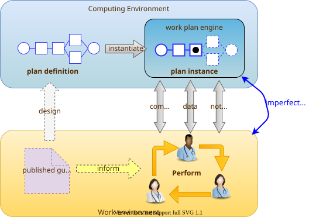
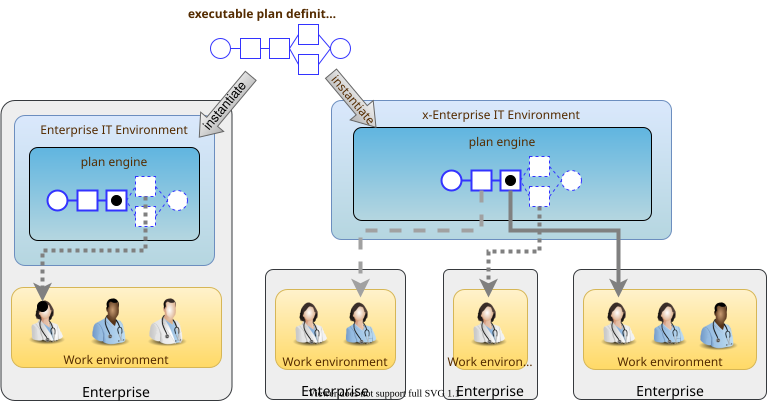

Deployment Paradigm
Separation of Worlds
As soon as the notion of planning is assumed, we enter the workflow space, and it becomes essential to describe the intended relationship of humans and machines in the work environment. This is due to the fact that any description of planned work acts as a set of instructions to actors intended to perform the tasks. Since the instructions (task plans) will be represented in the IT layer and the performing actors (generally human, although they may also be autonomous devices or software applications) exist in the real world, an account of the interaction between the computing environment and the real world is required.
Firstly, we distinguish the following entities in the work environment:
-
computing environment:
-
executable plan definition: a reusable definition of work to be done, consisting of tasks, potentially standardised according to a guideline or protocol;
-
executable plan instance: a run-time instance of a task plan, potentially with local variations, created for execution by an actor or actors;
-
-
real world:
-
performing actor: an autonomous human, machine or software application that performs tasks in the real world as part of a procedure designed to achieve a goal;
-
In real-world environments, the actors are not passive recipients of commands from a computer application implementing a plan, but are instead active agents who normally work together to perform a job. Working together involves peer-to-peer communication, coherent sequencing of tasks and so on. A workflow application provides help by maintaining a representation of the plan, and a representation of its progress in execution. It is immediately apparent that the application’s idea of a given plan execution and the real world state of the same work are not identical, and in fact may be only approximately related. For example, the computable form of the plan might only include some of the tasks and actors at work in the real world. There are in fact two workflows executing: a virtual workflow and the real world one, and there is accordingly a challenge of synchronisation of the two.
There is also a question of the nature of the communication between the workflow application and the real world actors, which we can think of as consisting of:
-
commands: signals from the plan system to a real world actor to do something;
-
notifications: signals to and from the plan system and the real world actors on the status of work, e.g. 'new work item', 'item completed' etc;
-
data: data collection from actors and presentation to actors from the system.
This view of the environment can be illustrated as follows.

Distributed Plans
There is a potentially complicated relationship between IT environments in which computable plans execute and the work-places where the human actors are found. This is because 'systems' in a concrete sense are part of IT installations owned by organisations that may or may not be the employers of the workers, while plans may logically span more than one distinct work-place. For example a clinical plan for diagnosing and resolving angina may contain steps that are performed by:
-
an emergency department (part of a hospital);
-
a general practitioner (in a separate health clinic);
-
a cardiologist (within a hospital, possibly a different one to the original ED attendance);
-
a radiology department (usually within a hospital, possibly also different, for reasons of availability, machine type etc).
These various healthcare facilities almost certainly have their own IT systems within a managed environment and security boundary, with some possible sharing of systems among some facilities. Consequently, where the notional clinical plan executes in the real world doesn’t usually cleanly correspond to one IT system in which a plan engine can execute it.
On the other hand, in an ideal environment with regional patient-centric hosted services (shared EHR etc), accessible by all healthcare facilities the patient visits, the logical locus of a plan’s activities - the various HCFs taken together - correspond 1:1 with a location where the plan can be executed by an engine, i.e. the regional system.
The following figure illustrates different possible relationships between a logical plan definition whose work is performed by actors in different enterprises, and the location of plan engines where such a plan may logically be executed. The particular arrangement shown has one enterprise (on the left) with its own separate IT (typical for most hospitals today) and three other enterprises that share regional health IT services relevant to the patient record and plan execution (they probably have their own private IT for more mundane purposes as well of course). The plan is shown as having tasks that are to be performed at all four of the enterprises.

The diagram implies a scheme in which the same plan might be executed in multiple places, presumably with synchronisation, however this is not posited as a requirement. The only hard requirement is that there is some means of enabling the various parts of a plan to execute in the various work-places required.
One of the challenges in such distributed work environments, which are the norm in healthcare, is the ownership, creation, maintenance and sharing of plan definitions that implicate workers across enterprises.